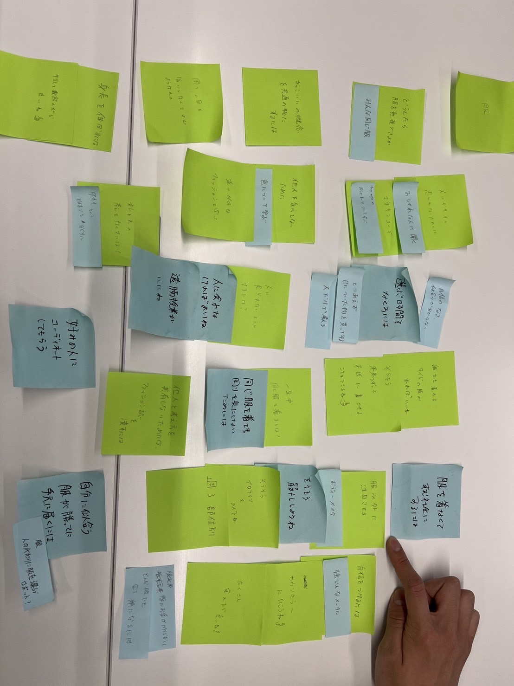

デザイン演習Ⅲ・Ⅳ assignment 第三回
動きを操る
ステッピングモーターを動かす
参考にしたプログラミング
- const int DIR = 8;
- const int STEP = 9;
- void setup() {
- pinMode(DIR, OUTPUT);
- pinMode(STEP, OUTPUT);
- digitalWrite(DIR, LOW);
- digitalWrite(STEP, LOW);
- }
- void loop() {
- for (int i=0; i <= 50; i++){
- clockwise(5000);
- }
- for (int i=0; i <= 50; i++){
- counter_clockwise(5000);
- }
- }
- void clockwise(int delaytime){
- digitalWrite(DIR, HIGH);//HIGHは時計回り
- digitalWrite(STEP, HIGH);
- delayMicroseconds(delaytime);
- digitalWrite(STEP, LOW);
- delayMicroseconds(delaytime);
- }
- void counter_clockwise(int delaytime){
- digitalWrite(DIR, LOW);//はLOWは反時計回り
- digitalWrite(STEP, HIGH);
- delayMicroseconds(delaytime);
- digitalWrite(STEP, LOW);
- delayMicroseconds(delaytime);
- }
明るさで回り方が変わるようにする。
- const int DIR = 8;
- const int STEP = 9;
- void setup() {
- pinMode(DIR, OUTPUT);
- pinMode(STEP, OUTPUT);
- digitalWrite(DIR, LOW);
- digitalWrite(STEP, LOW);
- Serial.begin(9600);
- }
- void loop() {
- int val=0;
- val=analogRead(1);
- Serial.println(val);
- if(val>150){clockwise(1000);
- }else{counter_clockwise(1000);
- }
- }
グループワークのまとめ、HMWとYes,andのIdiation
１つ目

２つ目

3つ目